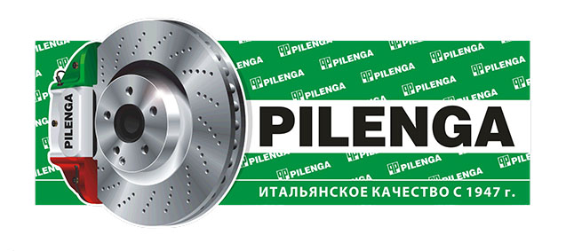

ПЕРВЫЕ В ПЕТЕРБУРГЕ


История марки
«Pilenga» — итальянская компания, основанная в 1947г. как металлургический завод по производству отливок для нужд автомобильной промышленности. В настоящее время — это крупнейший производитель тормозных дисков и барабанов для конвейеров автозаводов Европы и даже США (Клайслер и Харлей Девидсон).
Вся продукция «Pilenga» полностью соответствует стандартам качества принятым в ЕС. Наши заказы для российских автомобилей производятся на том же оборудовании и по той же технологии, что и заказы покупателей из стран ЕС. Не секрет, что большая часть продукции известных европейских брэндов для российских автомобилей производится в Азии по упрощенной технологии. Продукции «Pilenga» удается добиться конкурентной цены на Российском рынке за счет больших объемов продаж и веры руководства «Pilenga» в перспективы дальнейшего развития рынка запчастей в России. Существенным для снижения себестоимости является и то, что «Pilenga» закупает руду для нужд своего производства в РФ.
Эксклюзивным поставщиком продукции «Pilenga» в Россию является ООО «ВМ-моторспорт».